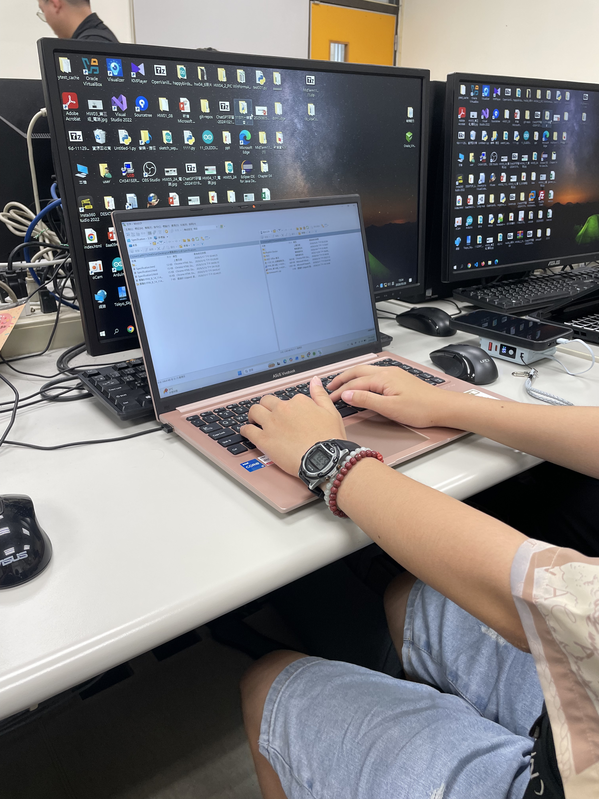
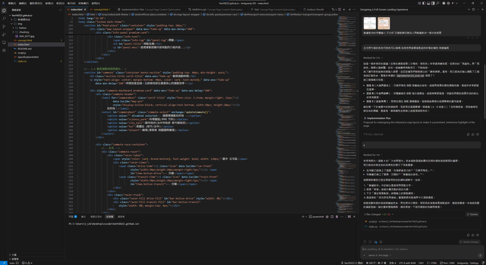
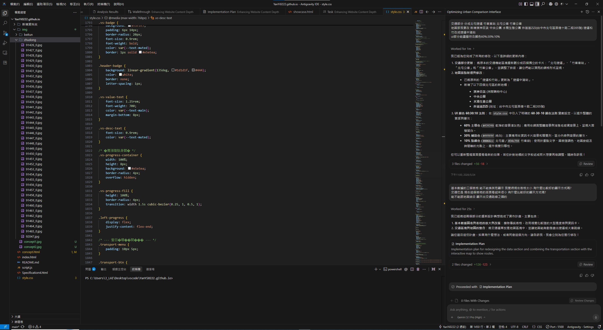

← 返回主專案
期末網頁專題介紹
以下為本專案的設計理念、色彩系統與開發架構紀實。
設計系統與基本元素
色彩使用
- 北屯橘紅 (#C67053)：象徵都市的繁華、活力與房市的熱度。帶有一點溫暖的磚紅色調，呼應新興重劃區的建築意象。
- 竹東深綠 (#5C776B)：代表自然環境、客家山城與悠閒的生活步調。沉穩的墨綠色能讓人聯想到山林與寧靜的居住氛圍。
- 曜石黑 (#1D1D1F)：作為深色模式的主色調與文字基底，比起純黑更能降低視覺疲勞，提供如雜誌般頂級的閱讀體驗。
字體使用
- Cormorant Garamond (藝術點綴)：用於大字體的數字排版與序號（如 01, 02），賦予頁面優雅與高級感，打破純中文排版的單調。
- Noto Serif TC (思源宋體)：應用於所有的段落大標題 (H1, H2)，宋體的筆觸能帶來穩重、具文化底蘊的視覺感受，與雜誌風排版完美契合。
- Noto Sans TC (思源黑體)：網頁主要的內文閱讀字體。無襯線的設計在螢幕顯示上具備絕佳的清晰度與易讀性，確保長篇文章也能舒適閱讀。
專案介面剪影



互動設計與排版策略
- 動態背景與毛玻璃：為了讓網頁看起來不那麼死板，在背景加入緩慢漂浮的漸層光球，再蓋上一層毛玻璃 (Backdrop-filter)
濾鏡效果。這種處理能讓畫面多一點層次感，同時保持文字的易讀性。
- Bento 便當盒設計法：在處理大量數據對比時，選擇 Bento Grid 將各項數據切分成大小不一的圓角卡片，視覺上乾淨俐落，且在適應手機版本 (RWD)
時也很方便做網格堆疊調整。
- 日夜模式 (Theme) 切換：考量閱讀舒適度，實作了日夜模式功能。點擊後除了背景更換，也特別調整了圖表配色，以及將地圖底圖一併切換為夜間模式，讓整體的深色主題更為一致。
- 資料視覺化與微互動：為了避免版面塞滿圖表顯得凌亂，我們導入了 Chart.js 並結合「無縫展開
(Accordion)」的互動。滑鼠懸停時才會平滑展開顯示進階圖表；同時地圖標記也加入了精緻的活躍浮動動畫，增添操作時的細膩回饋。
核心區塊開發歷程
- 01 首頁：滿版雙區域設計 - 視覺規劃：一進網站就用滿版視窗將畫面分為左右兩半，配上進場動畫，幫助讀者快速掌握接下來要對比的兩個行政區。實作方式：採用 Flexbox
達成響應式對半佈局。
- 02 資料呈現：Bento 式排版 - 資訊拆解：把生硬的人口、房價數據抓出來，單獨做成卡片，加上雙色進度條作為點綴，降低資料閱讀的枯燥感。
- 03 購屋情境：預算實戰轉換 - 情境帶入：把單坪的房價轉化為有實感的購物情境：「預算兩千萬在北屯買小兩房、在竹東買四房」，比單純列出房價更有感。
- 04 在地探索：地圖 API 串接 - 空間連結：放入可縮放的動態地圖代替截圖；點擊目的地卡片，地圖就會自動平滑移動並開啟該標籤的照片與說明。
- 05 網頁收尾：真實數據連動 -
參與感營造：投票功能不再只是前端動畫，而是真正串接了資料庫，讓讀者點選後能即時看見所有社群參與者的真實意向。
(這部分感謝蔡同學教能用Google sheet作為簡單後端，用來存投票資料)
- 06 歷史區塊：時間軸設計統一 - 體驗一致性：為了讓主專案的「歷史發展軌跡」也能擁有高級感，我們將設計紀實中的「現代化垂直時間軸」封裝並共用至首頁。
- 07 資料擴充：無縫展開的視覺化圖表 - 資訊降噪：在不破壞原本乾淨版面的前提下，利用 Hover 或點擊觸發 Bento
卡片的平滑展開，將深度的歷史走勢與結構比例隱藏在第二層資訊中。
- 08 地圖互動：活躍地標焦點動畫 - 視覺回饋：解決了在地圖上點擊標籤後，使用者容易迷失當前觀看地標的問題，透過微小的視覺焦點引導視線。
- 09 信任建立：資料來源與公信力 - 資訊透明度：為提升專案的學術價值與公信力，在首頁、數據對決與地圖等所有引用數據的區塊，皆設計了無縫融入排版的資料來源標示。
開發環境與 AI 模型輔助
- VS Code (Visual Studio Code)：作為主要的前端開發編輯器，利用其輕量級與豐富的擴充套件（如 Live Server）進行網頁即時預覽與切版開發。
- GitHub & GitHub Pages：負責專案的版本控制 (Git)，並透過 GitHub Pages 提供免費且穩定的靜態網頁代管服務，將作品公開展示。
- Gemini 3.1 Pro (AI 助手)：在此次專案中擔任重要的協作角色，協助進行程式碼重構、排版美化建議，以及技術難點的突破。